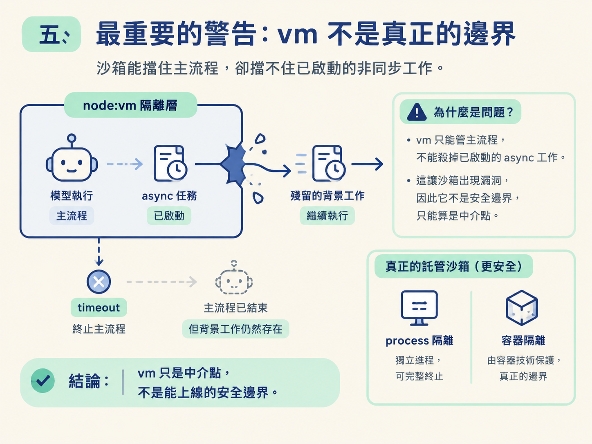

vm 不是安全邊界用一個 49 美元退款的 demo，觀察為什麼把算術交給程式碼，比交給模型推論可靠；找出 timeout 應該在哪一層設定；最後釐清：node:vm 可以協助隔離執行環境，卻不能當成真正的安全邊界。
沙箱已經蓋好，工具也接上了，但還有兩個問題必須回答：模型會不會真的寫程式？寫出的結果又可靠嗎？
如果模型寧可自己「想一想」就報出退款金額，前面做的沙箱等於沒有派上用場。反過來說，就算模型寫了程式，我們也必須知道程式怎麼執行、timeout 由誰控制，以及執行環境是否真的安全。
這一課會用一個客服情境走完這條路：讓模型寫出程式，找出重複扣款，算出精確的 49 美元退款；接著檢查 timeout 與錯誤處理，最後說明為什麼 node:vm 只是中介點，而不是能放心上線的安全邊界。
模型雖然看得到工具的 description，通常仍需要在 system prompt 裡補充這支工具的用途與使用時機。
這裡要明確告訴模型：需要算術時，使用 run_code 撰寫 JavaScript，並在 async 包裝中執行；程式可以使用 getCharges 與 searchKB 這兩個 helper。
這也是一個小型的 prompt engineering 練習。工具能不能被模型發現，主要靠清楚的描述，不需要套用神祕模板；真正決定它能不能執行，則是 harness 有沒有把工具正確接起來。
現在給 agent 一個需要實際計算的客服問題：
幫我找出重複的扣款，並告訴我確切的退款金額是多少美元。
送出請求後，模型先分類問題，接著呼叫 run_code。它產生的程式大致會完成幾件事：
await tools.getCharges(...) 取得扣款紀錄。console.log 印出資料，方便檢查。searchKB 查詢退款政策。return 回去。結果是49 美元的退款。這個數字不是模型憑印象猜出來的，而是程式執行後回傳的結果；對照假資料也能確認：同一名顧客在同一天，因同一筆 49 美元的金額被扣了兩次。
這種做法也比讓模型分別呼叫搜尋工具與算術工具，再自行拼湊答案更直接。模型負責提出程式，程式負責把資料算成結果。
這裡有一個容易反直覺的重點：模型很擅長寫程式，卻不適合在腦中做精確算術。
模型的推論是機率性的。遇到數字時，它可能把某個數字當成熟悉的模式，再生成另一個看似合理、實際卻錯誤的值。只要把算術交給模型「想」，就很難避免某次出現幻覺。
日期更容易出錯，因為它同時涉及多個位數與不同格式。生成過程中的一點偏移，就可能讓日期改變，或讓模型在計算時採用錯誤的值。

把輸入交給程式執行，結果就固定下來：同樣的輸入會得到同樣的輸出，而且可以重新執行、檢查與驗證。
因此，較務實的分工是：
模型產生的程式可能卡住，因此 timeout 是必要的安全帶。雖然預設值是兩秒，但目前只有設定預設值還不夠；真正要限制執行時間，必須在呼叫 runInSandbox 的地方，也就是 runTool 的對應 case，傳入 options.timeoutMs。
它的運作方式在第二課已經看過：withTimeout 會建立一個「時間到就 reject」的新 promise，再用 Promise.race 和程式原本的 promise 比賽。
程式先完成，就回傳程式結果；timeout 先到，則會走進錯誤流程，回傳 { ok: false, error }。因此，像 while (true) {} 這種無窮迴圈，最多只能執行到時間上限，不會無限期拖住伺服器。
可以直接執行一支不經 agent 的測試腳本，確認這層護欄處理四種情況：
tools 取得資料，並完成計算。while (true) {} 到達 timeout 後被終結。require("fs") 會失敗，因為 context 裡沒有 require。第四種情況尤其重要。錯誤不會直接把整個流程炸掉，而會變成一則模型能讀懂的訊息。這正是沙箱回傳結果中 ok 旗標的用途：模型可以先判斷執行是否成功，再決定要回覆、修正或重試。
vm 不是真正的邊界看到這裡，你可能會覺得沙箱已經很完整：能力注入能擋住模組載入，timeout 能處理卡死，錯誤也有結構化回傳。
但整節課最重要的警告是：node:vm 只是中介點，不是真正的安全邊界。
原因在於，它管不到已經「漏出去」的 async 工作。如果模型在沙箱裡啟動一個非同步任務，接著 timeout 終止了主流程，背景中的工作不一定會一起消失。vm 沒有能力保證把這些工作殺掉。

一個可以被繞過的隔離層，就不能算是真正的安全邊界。
課堂使用 node:vm，是為了快速看清楚能力注入、timeout 與錯誤回傳的機制。若要正式部署，應該使用託管的隔離沙箱，例如 e2b、Cloudflare Sandbox SDK、Fly、Daytona 這類產品。它們透過真正的 process 或容器隔離，才有機會承受刻意攻擊。
這個判斷可以搬回任何 runtime：不管是 OryxOS 還是 Java，分工都一樣——模型負責提出方案，harness 負責執行，而執行模型程式碼的地方，必須是一個不能任意逃出的房間。
runTool 呼叫 runInSandbox 時傳入 options.timeoutMs。require，以及將 bug 轉成模型可讀的結構化錯誤。vm 不是安全邊界：它無法保證終止漏出的 async 工作；正式部署應使用託管的隔離沙箱。到這裡，「沙箱與 Code Mode」就完成了。你現在有一個能執行模型程式碼的 runInSandbox、一支接進 harness 的 run_code 工具，也清楚知道這層隔離能處理什麼、不能保證什麼。